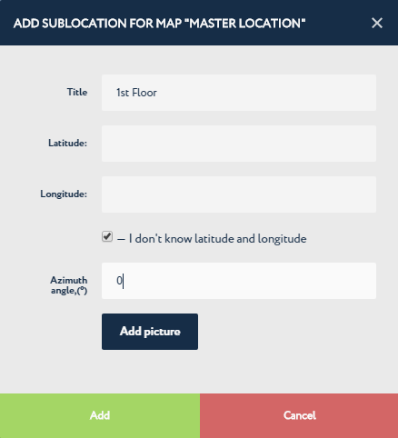

Create Sub-locations¶
In the forth step of getting started with the Navigine Indoor Location Services, you add sub-locations into the location(s) you’ve created earlier. Refer to Create Sub-locations if you need to create more locations.
The following table provides steps for creating sub-locations using the Navigine Content Management System (CMS).
In the Locations tab, click the location’s name in the list of locations, then click Add Sub-locations.

Once the ADD SUB-LOCATION dialog appears, specify:

Title - sub-location’s name of your choice
Latitude and Longitude (optional) - corresponding to bottom left corner of the picture you added, OR
If the latitude and longitude values are unknown, check the I don’t know the latitude and longitude check box
Azimuth angle - the angle between the North and the direction corresponding to the vertical axis of the picture you’ve attached. The angle is measured in degrees clockwise from the North direction. If the value is unknown, specify 0. You can edit the value later with the Edit sub-location button.
Add picture button - enables you to add the sub-location’s image for further reference. Consider using the location’s (building’s) original blueprints to simplify the subsequent map creation process. Only PNG and SVG image formats are supported.
Once you’re done with adding sub-locations into your location(s), go to Measure Sub-location Size.